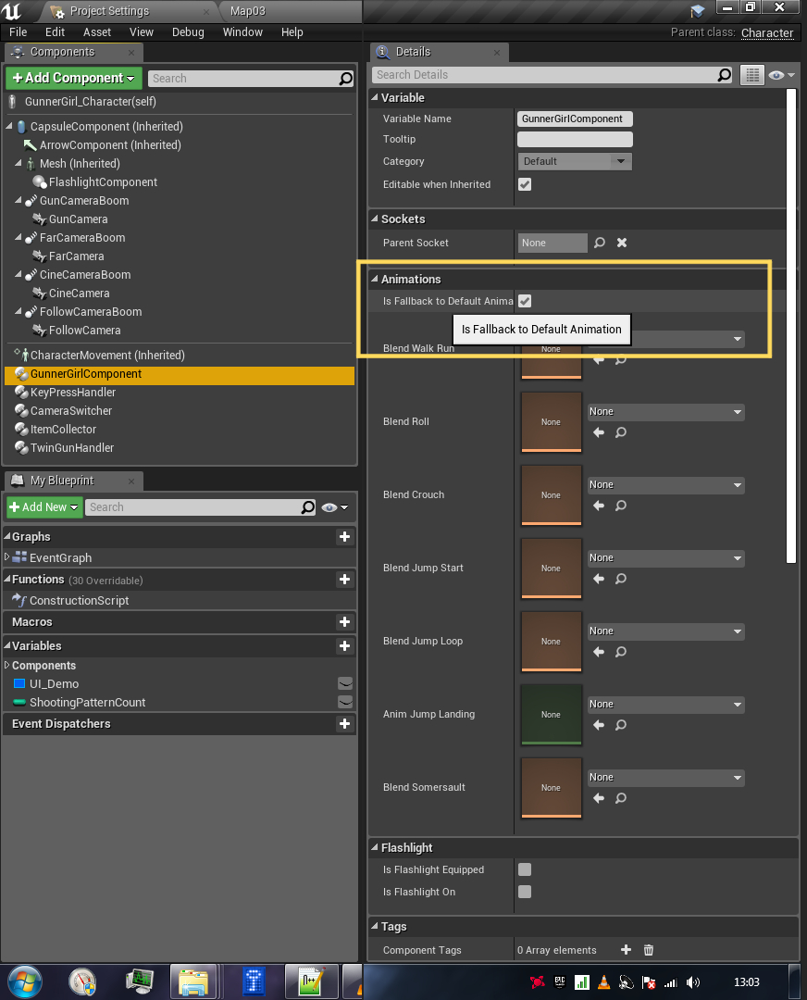

Female Shooter - User Guide
Using Custom Animations
It is possible to substitute the default animations used by the Female Shooter template with your own custom animations.
These animations can be changed from the Details tab of each respective components.

Do note that some of the animations will require a custom notify events to be added in order to make them work with the Female Shooter template.
You can check the list of all the animations that can be replaced by the user on the section below.
For details on what have changed, see the migration guide section on Custom Animations.
Animation/Blendspace List
The following is the list of customizable animation/blendspace variables that can be assigned by the user.
Click on each animation/blendspace to see what notify events are required for that animation.
GunnerGirlComponent animations
- Walking/Running (
Blend Walk Run ) - Roll (
Blend Roll ) - Crouch (
Blend Crouch ) - Jump Start (
Blend Jump Start ) - Jump Loop (
Blend Jump Loop ) - Jump Landing (
Anim Jump Landing ) - Somersault (
Blend Somersault )
TwinGunHandler animations
- Gun Idle (
Anim Gun Idle ) - Equip Normal (
Anim Equip Normal ) - Equip Gunspin (
Anim Equip Spin ) - Unequip Normal (
Anim Unequip Normal ) - Unequip Spin (
Anim Unequip Spin ) - Gun Aim Pose for the arm/hands (
Blend Gun Aim ) - Left Hand Gun Shoot Pose (
Blend Shoot Left ) - Right Hand Gun Shoot Pose (
Blend Shoot Right )
Notify Events
The following is the list of the notify events required by the FemaleShooter template.
When using custom animations, these notify events will mostly likely be required to ensure proper communication can be maintained with the Female Shooter components.
Notify events related to GunnerGirlComponent
-
MovementDisabled (GunnerGirlNotify)
Disable character movement. -
MovementEnabled (GunnerGirlNotify)
Enable character movement. -
FlyModeEnabled (GunnerGirlNotify)
Disable normal physics during airborne root motion animation.
Safe to use for single player, but might not work properly for replication. -
FlyModeDisabled (GunnerGirlNotify)
Re-enable normal physics at the end of an airborne root motion animation.
Safe to use for single player, but might not work properly for replication. -
SomersaultComplete (GunnerGirlNotify)
Tell the system that the character have finished their somersault.
Is used by the system to cleanup some animation settings. -
RollComplete (GunnerGirlNotify)
Tell the system that the character have finished their roll.
Is used by the system to cleanup some animation settings.
Notify events related to TwinGunHandler
-
GunInHand (TwinGunNotify)
Attach both guns to the character's hand.
By default this is set to the Weapon_L and Weapon_R socket on the skeleton. -
GunInHolster (TwinGunNotify)
Attach both guns to the character's holster
By default this is set to Holster_L and Holster_R socket on the skeleton. -
GunSpinStart (TwinGunNotify)
Tell the equipped guns to start spinning, the spinning movement will continue until GunSpinStop is called.
The gun spinning animation is performed independently from the character's animation.
(the gun can spin on its own without the character doing any animations) -
GunSpinStop (TwinGunNotify)
Tell the equipped guns to stop spinning, will only be performed if GunSpinStart was called previously. -
NormalPoseReady (TwinGunNotify)
Tell the system that the gun mode have been deactivated.
This will enable the following settings:- set
IsPoseActivated tofalse - Disable Strafe Mode (character will face whichever direction they are currently moving to)
- Dispatch GunnerGirlComponent.OnGunModeChanged event
- Dispatch GunnerGirlComponent.OnStrafeModeChanged event
- set
-
GunHandPoseReady (TwinGunNotify)
Tell the system that the gun mode have been activated.
This will enable the following settings:- set
IsPoseActivated totrue - Enable Strafe Mode (character will always face towards the camera's forward direction).
- Dispatch GunnerGirlComponent.OnGunModeChanged event
- Dispatch GunnerGirlComponent.OnStrafeModeChanged event
- set
-
GunShootAvailable (TwinGunNotify)
Tell the system that it can perform a shot whenever it's ready.The actual shooting process will only be activated after the
StartShooting function of TwinGunHandler is called.
Once this is done, TwinGunHandler will determine which shooting animation to be played based on theShootingPattern .The actual timing of when the shot is released is triggered by the location of either LeftGunShot or RightGunShot inside the shooting animation.
-
GunShootUnavailable (TwinGunNotify)
Tell the system to ignore any request to shoot the guns.
To re-enable the shooting functionality, use GunShootAvailable -
LeftGunShot (TwinGunNotify)
Tell the system that the left gun just released a shot.
TwinGunHandler will then generate a projectile and a muzzle flash at the location of the gun's MuzzleSocket. -
RightGunShot (TwinGunNotify)
Tell the system that the right gun just released a shot.
TwinGunHandler will then generate a projectile and a muzzle flash at the location of the gun's MuzzleSocket. -
LeftGunShotEnd (TwinGunNotify)
Tell the system that the previous shot have been completed and the left gun is ready to release another shot whenever required. -
RightGunShotEnd (TwinGunNotify)
Tell the system that the previous shot have been completed and the right gun is ready to release another shot whenever required.
Fallback to Default Animation
At the top of the Animation panel of the Details tab, before the list of all the animations, you will find a setting named

This setting provides control on whether the system should fallback and play the default animations included with the package, if there is no custom animations registered from the GunnerGirlComponent.
To make it a bit clearer,
- If the property is set to
false, user will need to provide all of the custom animations required to ensure that the system works as intended. - If the property is set to
true, user can provide only the animations that they wish to change, the rest of the empty ones will be handled by the default animations.